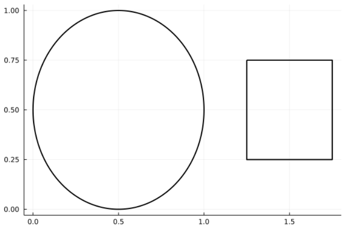
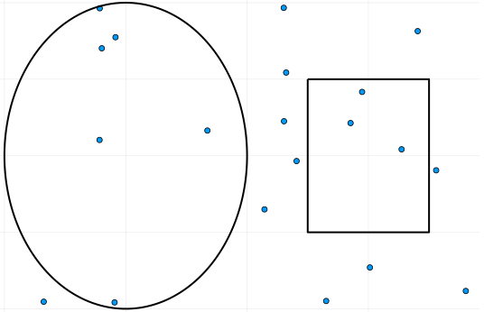
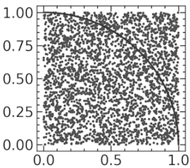
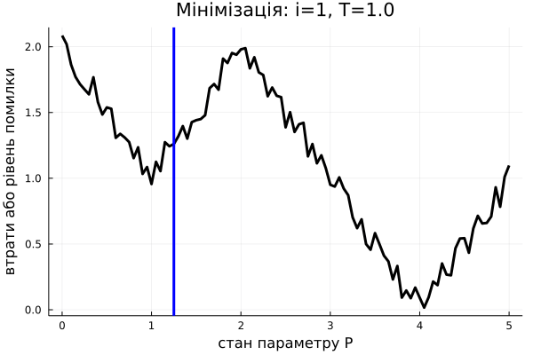
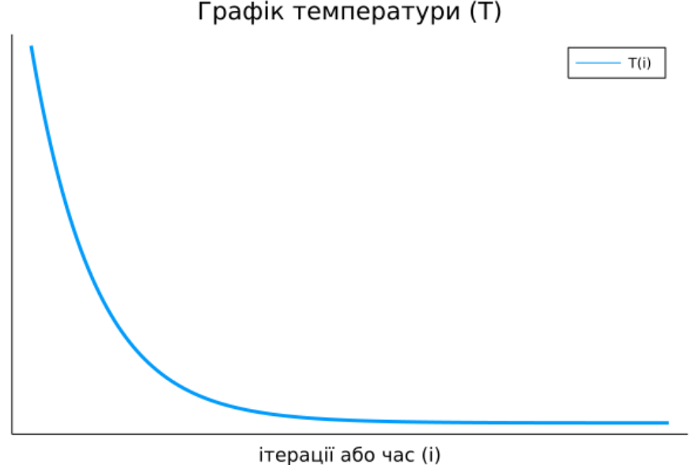

Методи Монте-Карло
Методи або симуляції Монте-Карло – це великий клас, певна сукупність, алгоритмів та методів, що застосовують випадковість (рандом) для симуляції якогось процесу. Це може включати в себе як просту ґенерацію (псевдо)випадкового числа, так і навіть відомі процеси Маркова чи мурашиний алгоритм. На жаль, не так багато сказано українською за цією темою, тому в цій статті я розгляну декілька різноманітних алгоритмів. Методи Монте-Карло, загалом використовуються у великій частці фізичних задач, що розв'язуються чисельно, адже застосовуються для чисельних експериментів.
Ідея, до якої все часто зводиться: використовуємо комп'ютер, аби повторювати симуляцію нашого стохастичного експерименту (підкидання монетки, випадкові обходи графу, будь-що пов'язане з рандомом). За законом великих чисел (для спрощення, доведення та математичне формулювання ми опустимо), за достатньо великої кількости повторень експерименту, ми зможемо достатньо чітко приблизно порахувати імовірність того чи іншого результату експерименту. Тобто, методи Монте-Карло застосовують, коли імовірність невідома, але ми можемо приблизно її порахувати за допомогою купи симуляцій.
- Наближення π
- Наближення інтеґралу
- Ґенерація чисел за розподілом
- Алгоритм імітації відпалу (Simulated Annealing)
Наближення π
Перші два розглянутих нами методи будуть стосуватися наближень, тобто наближених обчислень, а саме наближень площі (насправді вони майже ідентичні за логікою). Припускаю, що цю частину статті зможе зрозуміти й школяр. За допомогою наближення площі можна з непоганою точністю знайти значення числа π. Є декілька способів, утім, ідеєю вони суттєво й не відрізняються.
Для нашої симуляції уявімо собі певний прямокутник в системі координат, в якому ми й будемо працювати. Всередині цього робочого прямокутни виділимо дві окремих області, що не мають перетинатися: квадрат зі стороною \(a\) та коло з радіусом \(a\) (на ілюстрації нижче трохи викривлено масштаб).
Позначимо загальну площу робочого прямокутника як \(S\), площу круга як \(S_O\), квадрата як \(S_K\). Звісно, \[S_O = πa^2; S_K = a^2\] Звідси, \[\frac{S_O}{S_K} = \frac{πa^2}{a^2} = π\] Домноживши й поділивши дріб на \(S\) ми нічого не змінимо, але зможемо розбити початковий на два "зручніших" дроби. \[\frac{S_O}{S}\cdot\frac{S}{S_K} = \frac{S_O}{S_K} = \frac{πa^2}{a^2} = π\] Чим же дроби \(\frac{S_O}{S}\) та \(\frac{S}{S_K}\) взагалі зручніші? Справа в тому, що геометрично \(\frac{S_O}{S}\) та \(\frac{S_K}{S}\) — це ймовірності того, що випадково обрана точка з нашої робочої області опиниться всередині нашого круга або квадрата відповідно. Іншими словами, \[\frac{S_O}{S}\cdot\frac{S}{S_K} = \frac{S_O}{S}:\frac{S_K}{S} = \frac{P_O}{P_K}\] де \(S_O\) та \(S_K\) — відповідні ймовірності.
Алгоритм дій дуже простий: випадково обираємо точку \((x, y)\) в нашій робочій області, рахуючи, які точки потрапляють до кола, а які до квадрата.
Позначимо кількість випадкових точок за \(N\), кількість точок у колі - \(O\), кількість точок у квадраті — \(K\). Припустимо, що ми взяли дуже велике \(N\). Імовірність точки потрапити до круга буде приблизно \(P_O ≈ \frac{O}{N}\), до квадрата — \(P_K ≈ \frac{K}{N}\). Користуючись тим, що теоретично \(P_O\) має дорівнювати частці площі круга відносно всієї зони \(\frac{S_O}{S}\) (аналогічно, для \(P_K\)): \[π = \frac{S_O}{S}\cdot\frac{S}{S_K} = \frac{P_O}{P_K} ≈ \frac{O}{N}\cdot\frac{N}{K} = \frac{O}{K}\]
Тобто, для наближення π нам достатньо поділити кількість випадкових точок, що потрапили до круга на кількість тих, що потрабили до квадрату. Звісно, \(N\) має бути великим. Хоча вже при такій кількости точок, як на малюнку нижче, наближення буде доволі точним.
Код мовою Julia, що використовувався для створення ілюстрацій, можна подивитися за цим посиланням. Він навмисно написаний в явному вигляді, без особливих скорочень для збереження чіткости ідеї (також можете переглянути мій матеріял про саму мову Julia). Альтернативно, ви можете написати дуже короткий код, як зроблено в цьому відео (щоправда, мовою Python), де використовується геометрично інший метод.

# julia
N = 300000000
res = 4sum(rand(N).^2 .+ rand(N).^2 .< 1) / N
## ґенеруємо точки в одиничному квадраті, аби наблизити чверть площі одиничного кола, що становить π/4. потім множимо на 4.
Наближення інтеґралу (площі під кривою)
Користуючись майже тими ж самими властивостями, ми можемо наближено обчислювати визначені інтеґрали. Ми розглянемо приклад для функції однієї змінної, однак на практиці такий метод використовується лише для багатовимірних обчислень, адже для простіших задач існують більш точні методи апроксимації.
Тож, припустімо, що ми хочемо обчислити за допомогою випадкових точок \(\int^b_a f(x)dx\), тобто площу під графіком функції \(f(x)\) на відрізку \([a, b]\), припускаючи, що таке число існує. При загальній площі робочої области \(S\), кількості випадково обраних точок \(N\), з яких \(F\) потрапили під графік функції та імовірності потрапляння \(P_f\) маємо \[\int^b_a f(x)dx = P_f \cdot S ≈ \frac{F}{N}\cdot S\]
Єдина проблема залишається обрати межі робочої области. Насправді, можна довести, що найефективніше буде обрати прямокутник \([a, b]\times[0, \underset{[a, b]}{\max{}}f(x)]\), якщо припустити, що функція обмежена на цьому відрізку (тобто що максимум на відрізку існує). Інтуїтивно, це просто найменший прямокутник, що містить весь підграфік функції, тобто нам знадобиться менше випадкових точок для точнішого обрахунку, бо вони будуть щільніше потрапляти на малий прямокутник. Звісно, якщо наша функція розривна й у точці розриву "стрибає" далеко в гору, то це буде не зовсім коректно. Втім, рекомендую самостійно подумати над різними випадками, адже конкретна реалізація залежить від задачі: чи буває функція розривною, чи відомий максимум, чи легко знайти максимум чисельно тощо.
Очевидно, що більше точок, то краще наближення. Цього разу одразу пропоную короткий код у якості демонстрації. Повний код, де розглянуто конкретну функцію, що використовувався для створення ілюстрацій – за посиланням. Зауважу, що там висота регіону підбирається вручну.
# julia
## N - к-сть точок; f - функція; height - висота регіону; width - довжина регіону; S = height*width
points = [width*rand(N), height*rand(N)]
F = sum(points[2] .< f.(points[1]))
S_f = F/N*S
Ґенерація чисел за розподілом
При роботі з фізичними симуляціями та теорією ймовірности на комп'ютері, часто виникає потреба ґенерації випадкових чисел за певним розподілом. Сам комп'ютер, однак, вміє ґенерувати лише псевдорандомні числа з рівномірного розподілу. Тому було б непогано придумати метод, що дозволяє використовувати рівномірний розподіл для ґенерації чисел довільного розподілу. На щастя, в теорії ймовірностей існує гарна теорема, що допоможе нам це зробити (не лякайтесь формулювання).
Теорема (1): Нехай \(X\) – випадкова величина з кумулятивною функцією розподілу ймовірностей \(F(x)\). Тоді випадкова величина, що задається як, \(F^{-1}(U)\), де \(U \in [0; 1]\) – випадкова рівномірна величина, також має кумулятивну функцію розподілу ймовірностей \(F(x)\). \[X \sim F(x) ⟹ F^{-1}(U) \sim F(x)\]
Звучить, можливо, трохи незрозуміло, тому давайте розбиратися в інтуїції та зиску з цього твердження (доводити ми його не будемо). Якщо ми маємо випадкову величину \(X\) (власне, яку ми й хочемо ґенерувати комп'ютерно) з функцією густини ймовірности \(f(x)\), то кумулятивна функція розподілу ймовірностей \(F(x) = \int^{x}_{-\infty} f(ξ) dξ\), тобто \(F(x_0)\) позначає ймовірність того що \(X < x_0\) і дорівнює, умовно, сумі ймовірностей значень до \(x_0\). Отже це певна неспадна функція (тому що ми сумуємо додатні ймовірності), значення якої належить \([0;1)\) (бо загальна ймовірність має бути менше за 1), що характеризує наш розподіл імовірностей. Тоді ця функція має обернену (в більшості випадків, принаймні коли ми говоримо про недискретну \(X\)).
Помітимо, що \(F^{-1}(y)\) завжди визначена на \([0;1)\). За теоремою (1), ґенеруючи \(U \in [0; 1]\) за рівномірним розподілом та підставляючи у \(F^{-1}(U)\) будемо отримувати значення, альтернативні до \(X\), тобто ми можемо перейти до ґенерації \(U \in [0; 1)\) замість ґенерації \(X\), знаючи* \(F^{-1}(y)\). Ґенерація \(U\) здійснюється стандартним комп'ютерним методом псевдорандому, чи будь-яким іншим, який є простим і, що головне, можливим програмно.
Додамо ще трохи інтуїтивного розуміння. Оберіть випадкове число від нуля до одного. Підставте це число до \(F^{-1}(y)\) (приблизно наочно за малюнком 9). Ви отримаєте якесь число. Імовірність отримати приблизно таке число описаним вище чином така сама, як і ймовірність того що \(X\) набуде цього значення.
* – не обов'язково знати \(F^{-1}(y)\) у явному вигляді, хоча це трохи спрощує задачу. Достатньо знати \(F(x)\) й обчислити її на достатньо великій кількості значень, щоби замість обчислення \(F^{-1}(y_0)\) просто знаходити серед цих збережених значень найближче до \(y_0\) і повертати відповідний арґумент \(x_0\), аби \(F(x_0) \approx y_0\). При цьому пошуку не треба навіть обходити всі значення \(F(x)\), що ми записали, адже ми можемо використовувати бінарний пошук, бо збережені значення \(F(x)\) "відсортовані" через монотонність \(F(x)\).
Алгоритм імітації відпалу
Методи Монте-Карло можна також використовувати для машинного навчання. Особливо корисним це стає для вирішення дискретних задач за допомогою машинного навчання. Одним із простих ілюстративних алгоритмів для цього є алгоритм імітації відпалу. Складно кажучи, алгоритм імітації відпалу (з англ. Simulated Annealing) – це ймовірнісний метод апроксимації глобального оптимуму заданої функції. Простими словами, це випадковий метод розумного підбору відповіді для задачі. Саме пошук глобального оптимуму робить цей алгоритм цікавим, адже більшість методів апроксимації оптимуму шукають локальний.
У цього алгоритму є як суто алгоритмічна сторона, так і фізичний сенс. Спочатку розглянемо його з математичної та алгоритмічної точки зору. Як і в більшості алгоритмів машинного навчання, ми задаємо певну функцію втрат (що вимірює помилку для певного можливого розв'язку та набуває мінімального значення, коли розв'язок оптимальний), що залежить від параметрів системи: \(L(P):\mathbb{P} \rightarrow \mathbb{R}\) (де \(\mathbb{P}\) – простір всіх можливих параметрів/розв'язків задачі). Далі ми знаходимо її мінімум за параметрами системи, підбираючи таким чином набір параметрів \(P_{\text{min}} \in \mathbb{P}\), на якому наша модель помиляється найменше. Таким чином ми б "навчили" модель не сильно помилятися. Якщо б ми, починаючи з випадкової точки в просторі параметрів \(P_0 \in \mathbb{P}\), ітеративно рухалися лише "вниз" (тобто туди де \(L(P)\) набуває менших значень ніж у поточній точці), то ми б не гарантовано дійшли б до глобального мінімуму, залишившись у локальному. Наприклад, якщо б \(L(P)\) була не опуклою на області параметрів, яку ми розглядаємо.
Алгоритм імітації відпалу вирішує цю проблему тим, що він випадковий. Тобто іноді може перестрибувати на нові точки в просторі параметрів. Вони можуть бути гірше, ніж поточна, однак у середньому це дає більше шансів знайти глобальний мінімум. Якщо ви (раптом) чули про алгоритм Шьонінґа (Schöning's Algorithm) для SAT-задач, то це може чимось його нагадувати (якщо ні, то проігноруйте це речення). Власне, сам алгоритм:
\(P_i\) – поточний набір параметрів з \(\mathbb{P}\)
\(P\) – збережене припущення щодо оптимального набору параметрів з \(\mathbb{P}\)
\(\Delta P\) – деяка зміна для параметрів з \(\mathbb{P}\). Вона може обиратися випадково, або принаймні її знак має обиратися випадково.
- Обрати новий пробний стан \(P_{i} := P + \Delta P\)*
-
Якщо (\(P_{i}\) краще** за \(P\)) або з певною ймовірностю:
- Перемістити \(P := P_{i}\)
- Повторити з першого кроку, якщо не досягли потрібної точности
- Повернути \(P\) як оптимальне значення
* – Враховуючи, що \(\Delta P\) може обиратися випадково, можна просто випадково обирати \(P_i\)
** – в нашому випадку, мається на увазі оцінка \(L(P_{i}) < L(P)\)
Нумо розбиратися, що це означає. Ми робимо якесь початкове припущення щодо оптимуму \(P\). Далі обираємо якусь нову точку \(P_i\), трохи пересуваючись на \(\Delta P\) від \(P\). Якщо отримане \(P_i\) краще за наше припущення \(P\) (тобто якщо \(L(P_{i}) < L(P)\)), то ми міняємо \(P\) на \(P_i\). Якщо ж \(P_i\) гірше за наше припущення \(P\), то ми також можемо пересунути \(P\) на \(P_i\), у разі, якщо виконується певна ймовірнісна умова. Ця умова й містить суть алгоритму імітації відпалу.
Не важко помітити, що від цієї умови залежить можливість алгоритму "перестрибувати" до неоптимальних наборів параметрів. Ми хочемо, аби на початку алгоритму стрибки відбувалися частіше, щоби спробувати більше різних станів системи. Наприкінці ітерування ж, було б непогано пересуватися вже лише до кращих значень. Отже ймовірність далекого стрибку має обернено залежати від часу. Власне кажучи, ймовірність стрибнути, як правило, задається розподілом Больцмана, тобто ось такою формулою: \[\frac{1}{1+\exp(\frac{\Delta L}{T(i)})}\] де: \(\Delta L = L(P_{i}) - L(P)\) є зміна цільової функції, в нашому випадку це \(L(P)\); \(T(i)\) – величина, залежна від часу (тобто номеру ітерації \(i\)), її називають температурою системи, така, що вона наближається до нуля з часом:
За дуже високої температури (на початку алгоритму), вираз \(\frac{\Delta L}{T(i)}\) прямує до нуля, \(\exp(\frac{\Delta L}{T(i)})\) прямує до 1, отже весь дріб \(\frac{1}{1+\exp(\frac{\Delta L}{T(i)})}\) прямує до \(\frac{1}{2}\). За малої температури й додатнього \(\Delta L\) (тобто коли нові параметри \(P_i\) для нас гірші за обрані зараз \(P\), бо \(L(P_{i}) > L(P)\)), імовірність прямує до нуля. За малої температури та від'ємного \(\Delta L\) (тобто коли нові параметри \(P_i\) кращі за обрані зараз \(P\)), імовірність прямує до 1, а значить ми стрибнемо до кращого набору параметрів. Отже, в самому алгоритмі не обов'язково навіть перевіряти, чи \(P_{i}\) краще за \(P\), адже це робиться, в якомусь сенсі, автоматично. Примітка: іноді можна побачити деякі інші варіянти випадкових умов на цьому місці, а вибір функції \(T(i)\) залежить від конкретної задачі.
Тепер поговоримо про фізичний сенс цього алгоритму. Справді, введення поняття "температури системи" натякає на фізичну інтерпретацію алгоритму. Помітимо, що УМОВА залежить не від часу, а від температури, яка, вже в свою чергу, залежить від часу. Сама ж назва алгоритму походить від відпалу в термообробці: нагрівання металу до критичної температури й повільне охолодження для того, щоб зробити матеріял міцнішим і стабільнішим.
Маємо стан певної фізичної системи \(P\) та функцію енергії від стану \(L(P)\), отже задача може бути переформульована наступним чином: знайти стан системи, в якому енергія мінімальна (можна було б увести більш стандартні перепозначення, \(s\) та \(E(s)\), але я не буду нікого плутати). При цьому ми знижуємо температуру системи поступово.
Як приклад, рекомендую ознайомитись із інтерактивною статею, де за допомогою цього алгоритму вирішується задача комівояжера. Алгоритм там можна налаштовувати майже будь-яким чином.